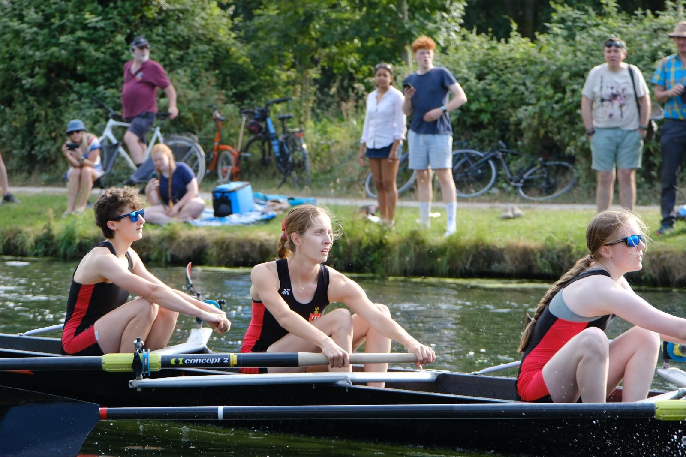

Beginners
Novice Programme
The vast majority of our members join never having rowed. Our novice programme takes you from your first outing to racing in a single term — no experience needed.
Learn to row →From complete beginner to Boat Race trialist — join the most decorated rowing club on the Cam, with world-class coaching, an unrivalled fleet and a boathouse five minutes from your door.

As a boat club, we cater to all levels. The vast majority join as beginners and take part in our novice programme in their first term, before joining our senior crews. Experienced rowers can jump straight in, and every year several students go on to trial with the University — receiving the best financial support available from any Cambridge college.
As if we don't have enough fun on the water, we run an amazing set of social events: informal bar nights, crew pastas and black-tie formals to celebrate the end of each term.
We boast excellent facilities just a five-minute cycle from College accommodation, one of the most extensive fleets on the Cam, and a Level-4 head coach. Historically, we are the most successful Cambridge college boat club.
Whether you've never held an oar or you're chasing a Blue, there's a clear path for you at Jesus.
The vast majority of our members join never having rowed. Our novice programme takes you from your first outing to racing in a single term — no experience needed.
Learn to row →Already row? Step straight into our senior crews. Several Jesus rowers trial for CUBC every year — and receive the best financial support of any Cambridge college.
Race with us →Bar nights, crew pastas, black-tie formals and a heavily subsidised January training camp in Spain. The club is as much about people as podiums.
Facilities →One of Cambridge's great rowing traditions — a long-distance head race down the Cam contested by college crews from across the University. Founded in 1929 in the spirit of Steve Fairbairn, it's the highlight of Michaelmas term, and JCBC runs it.
A 1930s boathouse beside Goldie, refurbished in 2013 — over 30 boats, an ergo room, workshop and full changing facilities.
Boats in the fleet, from tubs and sculls up to brand-new Filippi eights.
Full-time qualified coaches, led by a Level-4 British Rowing head coach.
Cycle from College accommodation — the most convenient location in Cambridge.
All Jesus College students — and anyone who shortly will be — can sign up now. No experience required. We'd love to hear from you.